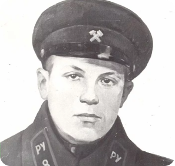
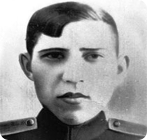
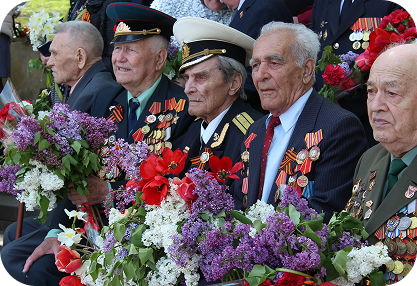
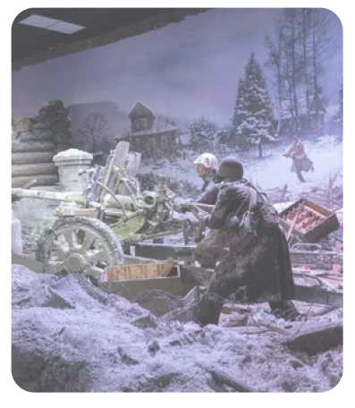
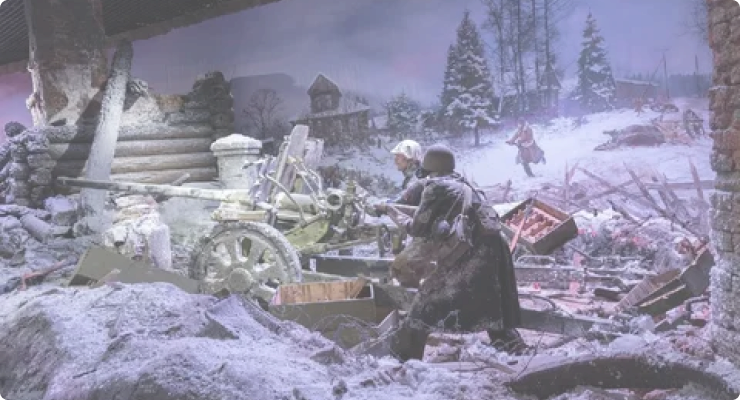
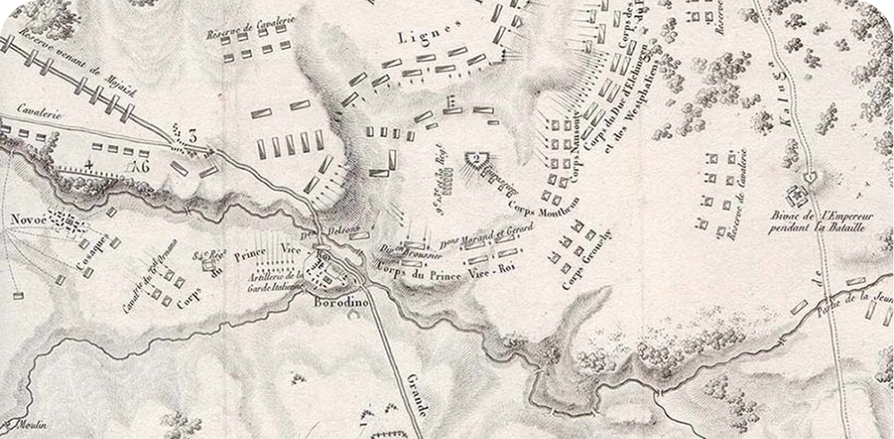

Герои Великой Отечественной войны. Настоящие истории советских солдат
Во время Великой Отечественной войны за подвиги на фронте и за его пределами государственные награды получили миллионы бойцов и тружеников тыла. За каждой цифрой стоял человек, его выбор, страх, мужество и судьба.
Одна из руководителей подполья в Витебской области. Герой Советского Союза.
ГЕРОЙ · 01
Вера Захаровна Хоружая
1903 — 1942 · Герой Советского Союза
Родилась 27 сентября 1903 года в Бобруйске. Ещё до войны участвовала в подпольной борьбе в Западной Беларуси и побывала в польских тюрьмах. В августе 1942 года вместе с группой подпольщиков отправилась в Витебск и стала одним из руководителей подполья в оккупированной области. 13 ноября 1942 года была схвачена, в том же месяце казнена. Звание Героя Советского Союза присвоено посмертно 17 мая 1960 года.

02
Иван Андреевич Счастный
Один из организаторов и руководителей Скидельского комсомольско-молодёжного подполья.
ГЕРОЙ · 02
Иван Андреевич Счастный
1925 — 1942 · Комсомолец-подпольщик
Родился 23 февраля 1925 года в деревне Черлёна Гродненской области. Учился в ремесленном училище в Гродно. С первых дней оккупации вошёл в подполье, а в сентябре 1941 года возглавил комсомольскую группу в Скиделе: распространял листовки и сводки Совинформбюро, передавал партизанам разведданные, оружие и боеприпасы. Арестован по доносу провокатора и 13 сентября 1942 года казнён вместе с товарищами. Посмертно награждён орденом Отечественной войны II степени.

03
Курбатов Михаил Тихонович
Младший сержант, командир отделения. Герой Советского Союза, погиб в боях за Гродно.
ГЕРОЙ · 03
Курбатов Михаил Тихонович
1924 — 1944 · Герой Советского Союза
Родился 15 января 1924 года в посёлке Магдагачи. На фронте с апреля 1942 года, был дважды ранен. 28 июня 1944 года в бою за Могилёв, приняв командование взводом, гранатами уничтожил вражеский дзот и открыл путь наступающему подразделению. 18 июля 1944 года погиб в бою за плацдарм на Немане у Гродно. Ему было 20 лет. Звание Героя Советского Союза присвоено посмертно 24 марта 1945 года.
03 / ПАМЯТЬ БЕЛАРУСИ
Их имена навечно вписаны в историю Беларуси
В этом разделе мы храним имена и лица тех, чьим мужеством и жертвой была добыта Победа. Герои Советского Союза, партизаны, подпольщики, простые солдаты и труженики тыла — все, для кого защита родной земли стала делом чести.
Мы помним каждого.

Память начинается с лица.
04 / ХРОНИКА
Война, рассказанная по годам
Четыре года, 1418 дней и миллионы человеческих судеб. Хроника становится центральной дорогой сайта.
22 ИЮНЯ 1941 — 9 МАЯ 1945
Дорога Памяти: 1941–1945
От трагического начала до победного салюта. По годам — события, переломы и люди, через которых мы видим историю.
22 июня — начало войны. Тяжёлые отступления, оборона Брестской крепости, блокада Ленинграда. В декабре контрнаступление под Москвой остановило блицкриг.
1941
Год внезапного удара и народного сопротивления
Война началась 22 июня 1941 года. В первые месяцы Красная Армия отступала, а оборона Брестской крепости и блокада Ленинграда стали символами стойкости. В декабре советские войска перешли в контрнаступление под Москвой, сорвав план молниеносной войны.
19 41

ГЛАВА II
Год тяжёлых испытаний и перелома
Лето 1942 года принесло новые тяжёлые бои. В ноябре началось контрнаступление под Сталинградом, а в феврале 1943 года завершилось окружение и разгром группировки противника.
1942
Год тяжёлых испытаний и перелома
Летом 1942 года немецкое наступление развернулось на юге. Бои за Сталинград стали одним из главных испытаний года. 19 ноября началось советское контрнаступление, завершившееся окружением крупной группировки противника.
19 42
ГЛАВА III
Год окончательного перелома
Победа под Курском закрепила стратегическую инициативу. Красная Армия начала широкое наступление, освобождая всё новые территории.
1943
Год окончательного перелома
После победы под Сталинградом и Курской битвы стратегическая инициатива окончательно перешла к Красной Армии. Началось широкое освобождение оккупированных территорий, а Днепр стал одним из важнейших рубежей наступления.
19 43
ГЛАВА IV
Год освобождения
Летом 1944 года операция «Багратион» стала одним из крупнейших наступлений войны и привела к освобождению Беларуси. Фронт стремительно двигался на запад.
1944
Год освобождения
Операция «Багратион» летом 1944 года привела к освобождению Беларуси и разгрому крупной группировки немецких войск. Советские войска продолжили движение на запад, приближаясь к границам Германии.
19 44
ГЛАВА V
Год Победы
Весной 1945 года Красная Армия подошла к Берлину. 9 мая стало днём Победы в Великой Отечественной войне, но память о цене этой победы осталась навсегда.
1945
Год Победы
Весной 1945 года Красная Армия провела завершающие операции, а 9 мая стало Днём Победы в Великой Отечественной войне. Завершение войны стало итогом 1418 дней борьбы и огромных человеческих потерь.
19 45
05 / СРАЖЕНИЯ
Поворотные сражения
Ключевые рубежи войны. Для каждого события указаны дата и исторический контекст.

ПРЕДЫСТОРИЯ
Оборона Гродно
Событие сентября 1939 года. Оно относится к началу Второй мировой войны и помещено здесь как исторический контекст, а не как сражение Великой Отечественной войны.
Одно из крупнейших и наиболее кровопролитных сражений войны. Окружение немецкой группировки стало важнейшим стратегическим и психологическим переломом.
Нажмите на точку, чтобы увидеть историческую справку.

ВЫБРАННАЯ ЛОКАЦИЯ
Московская битва
Крупнейшее сражение первого года войны, где был развеян миф о непобедимости вермахта. Здесь наступление было остановлено, а затем противник отброшен от столицы.
1418
ДНЕЙ: ПУТЬ ПОТЕРЬ И СТОЙКОСТИ
Эта дорога — путь через потерю и стойкость, через 1418 дней, которые изменили миллионы судеб. Она ведёт нас не только к Победе, но и к пониманию цены, которая за неё заплачена.